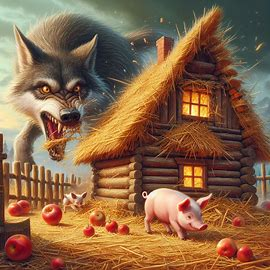
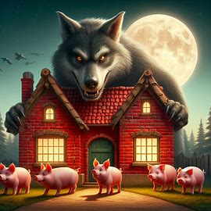
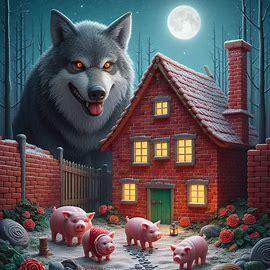

Három kismalac együtt építettek házakat, az egyik szalma, a másik fa, a harmadik pedig téglából.
A farkas megpróbált bejutni az első két malac házába, de azok összedőltek, mert gyengén voltak megépítve.
Az utolsó malac téglából építette a házát, amelyet a farkas sem tudott legyőzni.
A farkas próbált átjutni a téglaházon is, de sikertelen volt.
Végül a malacoknak sikerült elzavarniuk a farkast, és biztonságban éltek tovább.
A mese tanulsága: a kitartás és a kemény munka mindig meghozza a gyümölcsét.